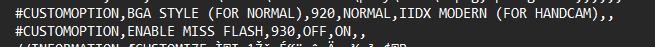
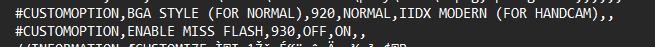

Advanced Definitions
This page contains advanced definitions of the skins that are not sprite-related, but rather the ones that alter the behaviors of the skins itself.These definitions are compatible with LR2 and its forks.
Skin definition-related
The definitions here decides what the skin is and what it uses. As far as I know, they are commonly defined in the .lr2skin file itself.
#INFORMATION
These definitions are used to define the skin itself, such as its name, author, and other information of the LR2 skin file.
These definitions are commonly used in the .lr2skin file itself.
#CUSTOMOPTION
This is where you define custom skin options that the player can choose between.
While the DST options slots range from 900-998 (999 if you use LVF).
According to the original guide, you can define 21 of that and #CUSTOMFILE definitions before the client starts experiencing issues. Surely you won't need that many right?

#CUSTOMFILE
Similar to #CUSTOMOPTION, but this defines the sprites that can be added, replaced or removed according to the player's needs.
This shares the same stability limit of 21 of such definitions with #CUSTOMOPTION.
#ENDOFHEADER
Spaghetti code. No one really knows why it's there or what is its purpose, but somethings might break without it.
The definitions here decides what the skin is and what it uses. As far as I know, they are commonly defined in the .lr2skin file itself.
#INFORMATION
These definitions are used to define the skin itself, such as its name, author, and other information of the LR2 skin file.
These definitions are commonly used in the .lr2skin file itself.
| Definition | Description |
|---|---|
| type |
Specifies what the skin is used for.
The indexes are as follows:
|
| title | Defines the name of the skin. |
| maker | Defines the author of the skin. |
| thumbnail | The image to be displayed when live skin preview is off. |
#CUSTOMOPTION
This is where you define custom skin options that the player can choose between.
While the DST options slots range from 900-998 (999 if you use LVF).
According to the original guide, you can define 21 of that and #CUSTOMFILE definitions before the client starts experiencing issues. Surely you won't need that many right?
You have beatoraja if you need that ffs

| Definition | Description |
|---|---|
| title | Specifies what the option does. It should be short and easy to understand. |
| dst_op | Specifies the starting DST number slot of the first option. Subsequent numbers will increment its DST number. |
| op_label | Specifies the name of each option. |
#CUSTOMFILE
Similar to #CUSTOMOPTION, but this defines the sprites that can be added, replaced or removed according to the player's needs.
This shares the same stability limit of 21 of such definitions with #CUSTOMOPTION.
| Definition | Description |
|---|---|
| title | Specifies the asset name. It should also be short and easy to understand. |
| path |
Specifies the path the the forementioned asset's folder. It
should be a relative path starting from LR2files\Theme pointing
to your skin. The wildcard * is used here to assign all the file with matching extensions (such as .png) into the asset's settings. Note that you cannot mix and match different file types, choose one or the other. |
| default | Specifies the default option of the asset. This is also the option when the skin is freshly extracted to the client. |
#ENDOFHEADER
Spaghetti code. No one really knows why it's there or what is its purpose, but somethings might break without it.
Branching-related
Conditional branching. This can be extremely useful to fit the sprites in different situations, but it also equally makes that many different veins pop out when trying to figure out the right combination.
#IF / #ELSEIF / #ELSE / #ENDIF
If you know some basic coding then you already know what each does:
#IF specifies a DST argument to be checked,
and if it fails then it checks the #ELSEIF DST argument,
and then returns the #ELSE sprite display if none are met.
#ENDIF to close the #IF function.
You can create an AND function by chaining two or more DST options, one after the other and the sprite will only be displayed when all of the DST conditions are met.
Do note that the conditional branching is only checked once on skin load, and if the conditions are not met, the rendering is skipped completely.
Exercise extra caution when this is used for #IMAGE definitions, as its gr value may shift, causing unintended behaviors.
Incorrectly defined #ELSE functions can cause multiple definitions to be used instead of just one.
Unlike the DST op1-3 branching, you cannot use ! or - in front of the option to create a NOT argument.
Example:

You can use up to 3 DST options slots for branching. NOT function by using ! or - is allowed.
This also allows the sprite to be loaded on demand when the requirement is met.
Note that this is not the same as #IF, as it is checked every frame and not just on skin load, and #IF condition will take priority if both are defined.
#INCLUDE
Used to include other .csv files into the current one. This is useful for option branching, as you can define different options in different files and include them in the main .csv file.
NOTE: DO NOT include the same file multiple times, as it will cause the client to crash, or worse, even cause a memory leak (not confirmed, but i'm not stupid enough to try it)
#SETOPTION
Used to set the DST option to a specific value. This is useful for setting the default DST option to a specific value when the skin is first loaded.
Conditional branching. This can be extremely useful to fit the sprites in different situations, but it also equally makes that many different veins pop out when trying to figure out the right combination.
#IF / #ELSEIF / #ELSE / #ENDIF
If you know some basic coding then you already know what each does:
#IF specifies a DST argument to be checked,
and if it fails then it checks the #ELSEIF DST argument,
and then returns the #ELSE sprite display if none are met.
#ENDIF to close the #IF function.
You can create an AND function by chaining two or more DST options, one after the other and the sprite will only be displayed when all of the DST conditions are met.
Do note that the conditional branching is only checked once on skin load, and if the conditions are not met, the rendering is skipped completely.
Exercise extra caution when this is used for #IMAGE definitions, as its gr value may shift, causing unintended behaviors.
Incorrectly defined #ELSE functions can cause multiple definitions to be used instead of just one.
Unlike the DST op1-3 branching, you cannot use ! or - in front of the option to create a NOT argument.
Example:
Extra: DSTop conditional branching
You can use up to 3 DST options slots for branching. NOT function by using ! or - is allowed.
This also allows the sprite to be loaded on demand when the requirement is met.
Note that this is not the same as #IF, as it is checked every frame and not just on skin load, and #IF condition will take priority if both are defined.
#INCLUDE
Used to include other .csv files into the current one. This is useful for option branching, as you can define different options in different files and include them in the main .csv file.
NOTE: DO NOT include the same file multiple times, as it will cause the client to crash, or worse, even cause a memory leak (not confirmed, but i'm not stupid enough to try it)
#SETOPTION
Used to set the DST option to a specific value. This is useful for setting the default DST option to a specific value when the skin is first loaded.
| Definition | Description |
|---|---|
| dst_op | Specifies the DST option to be set. |
| switch | Specifies whether it is 0 for Off or 1 for On. |
Time control-related
Specify when the skin accepts certain inputs. It also affects the timing of some timer definitions.
It should only be used once per skin, except when #IF branching is used.
#STARTINPUT
Defines when the skin starts accepting inputs. This is usually used to prevent inputs from being accepted before the skin is fully loaded.
If the time hasn't passed yet, the skin will not accept any inputs.
Normally there is 1 slot, with the exception of the results skin, which uses 3.
#SKIP
Decide skin only. If the time has passed, you can skip if needed.
Unless the time is higher than #STARTINPUT, #STARTINPUT takes priority.
#LOADSTART
Play skin only. This specifies the time between when the skin loads and when the chart starts loading.
#LOADEND
Play skin only. This specifies the minimum loading time of the chart. (Actual loading times vary and I dont really understand this definition yet)
#PLAYSTART
Sets the delay after the loading has finished for when the chart plays.
This is also essentially the time between timer40 and timer41 (according to the original page)
#CLOSE
Specifies the time before moving on to the results screen when failed with Hard on. (or quick restart if black+white keys are held down)
#FADEOUT
Same as #CLOSE, but the timer is counted from when the remaining time of the chart is 0. (End of File)
Specify when the skin accepts certain inputs. It also affects the timing of some timer definitions.
It should only be used once per skin, except when #IF branching is used.
#STARTINPUT
Defines when the skin starts accepting inputs. This is usually used to prevent inputs from being accepted before the skin is fully loaded.
If the time hasn't passed yet, the skin will not accept any inputs.
Normally there is 1 slot, with the exception of the results skin, which uses 3.
| Definition | Description |
|---|---|
| start | Specifies the time when the skin starts accepting inputs. |
| rank (Results only) | Specifies the time after the rank has been displayed to accept inputs. |
| update (Results only) | Specifies the time after the update screen (if defined) to start accepting inputs. |
#SKIP
Decide skin only. If the time has passed, you can skip if needed.
Unless the time is higher than #STARTINPUT, #STARTINPUT takes priority.
#LOADSTART
Play skin only. This specifies the time between when the skin loads and when the chart starts loading.
#LOADEND
Play skin only. This specifies the minimum loading time of the chart. (Actual loading times vary and I dont really understand this definition yet)
#PLAYSTART
Sets the delay after the loading has finished for when the chart plays.
This is also essentially the time between timer40 and timer41 (according to the original page)
#CLOSE
Specifies the time before moving on to the results screen when failed with Hard on. (or quick restart if black+white keys are held down)
#FADEOUT
Same as #CLOSE, but the timer is counted from when the remaining time of the chart is 0. (End of File)
Other definitions
Part spaghetti, part useful. I currently can't comprehend these definitions yet, so I will just list them here.
If you know what these do, please let me know so I can update this. In the meantime, I'm just reading off the translation of the original page.
Sometimes though, even with this definition, the banner won't budge. (It's not a bug it's a feature)
DP Flip does this without this definition, so it's only meant for battle mode.
NOTE: Using this will cause #IF op330 to stop working properly.
This defines the scratch position of each side, 0 for left, 1 for right.
While the definition by itself doesnt matter that much since the scratch lane is defined by #DST_NOTE, but when playing 5key, this will decide which lanes to be omitted:
Part spaghetti, part useful. I currently can't comprehend these definitions yet, so I will just list them here.
If you know what these do, please let me know so I can update this. In the meantime, I'm just reading off the translation of the original page.
#RELOADBANNER
For the banners displayed on the selection skin,if you don't include this, the banner won't be updated when you change the song.Sometimes though, even with this definition, the banner won't budge. (It's not a bug it's a feature)
#TRANSCOLOR
Sets the transparency color of the image when the blend is 0.#FLIPSIDE
For Play skins, if there are definitions for 1P and 2P, using this will flip the positions of 1P side and 2P side.DP Flip does this without this definition, so it's only meant for battle mode.
#FLIPRESULT
For results skins. Similar to #FLIPSIDE, but this can inherit the flipped definition from the play skin.NOTE: Using this will cause #IF op330 to stop working properly.
#DISABLEFLIP
This disables flipping inherited from play skins.#SCRATCH
This defines the scratch position of each side, 0 for left, 1 for right.
While the definition by itself doesnt matter that much since the scratch lane is defined by #DST_NOTE, but when playing 5key, this will decide which lanes to be omitted:
- 0 to omit 2 rightmost lanes
- 1 to omit 2 leftmost lanes